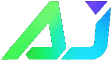

Imagem e som
Roteiro, captação, edição, direção, som e diferentes linguagens de produção.

Quero acompanharData prevista 17, 18 e 19 de setembro de 2027 · Joinville, SC
Um festival onde cultura digital, audiovisual, criatividade e tecnologia ganham forma em experiências reais.
Primeira edição em estruturação. Local e programação ainda não confirmados.
A ArenaJoin é um festival de cultura digital que conecta pessoas, ideias, talentos e experiências.
Mais do que observar, o público poderá explorar, testar, aprender, criar e participar.
O audiovisual funciona como uma linguagem que atravessa o festival, conectando creators, animação, arte digital, games autorais, inteligência artificial, personagens, figurinos e novas narrativas.
Games continuam como um dos pilares, mas não resumem a ArenaJoin.
O audiovisual não entra como um card isolado. Ele conecta formação, criação, registro, circulação e memória em diferentes frentes da ArenaJoin.
A proposta é reunir produção audiovisual, animação, arte digital, criação de conteúdo, games, inteligência artificial e novas formas de contar histórias.
Além do encontro presencial, o núcleo poderá gerar oficinas, registros, entrevistas, conteúdos formativos e um acervo digital das ações desenvolvidas.
Roteiro, captação, edição, direção, som e diferentes linguagens de produção.
Ilustração, movimento, design e criação visual aplicada a telas e experiências.
Projetos autorais, construção de mundos, personagens e histórias interativas.
Ferramentas, processos e debates sobre inteligência artificial na produção cultural.
Design de personagem, cinema, animação, games, cosplay e construção visual.
Documentação das atividades e produção de conteúdo para ampliar o alcance do projeto.
Uma atividade que conecta figurino, design de personagem, cinema, animação, games, cosplay, criação visual e produção cultural. Formato, locais e participação serão divulgados após a definição do projeto.
Os temas abaixo orientam a construção do festival. Eles não representam atrações ou programação já confirmadas.
Cinema, vídeo, animação, criação de conteúdo e diferentes formas de contar histórias usando imagem, som e tecnologia.
Ferramentas, debates e experiências sobre como a inteligência artificial está transformando a criação, o trabalho e o cotidiano.
Ideias, produção, comunidade e os bastidores de quem transforma criatividade em conteúdo.
Competições, projetos independentes, desenvolvimento, narrativas e experiências para quem joga e para quem cria.
Ilustração, animação, design, instalações e expressões que nascem entre arte e tecnologia.
Projetos, protótipos, automação e soluções que aproximam tecnologia, engenharia e criatividade.
Criação de personagens, figurino, performance e comunidades que transformam referências em presença.
Ativações e interfaces pensadas para tocar, testar, movimentar e participar.
Conteúdo, formação, cursos e conexões para compreender novas profissões e possibilidades.
Projetos, empresas e oportunidades para aproximar quem cria de quem pode ajudar a construir.
Você poderá experimentar ferramentas, participar de oficinas, acompanhar conversas, conhecer projetos, explorar novas tecnologias e encontrar pessoas que estão criando o que vem depois.
Os nomes abaixo funcionam como conceitos de planejamento. A configuração final dependerá do local, dos parceiros e da programação. O Núcleo Audiovisual poderá atravessar diferentes espaços, sem depender de uma arena física exclusiva.
A experiência não precisa começar nem terminar no evento principal.
A ArenaJoin pretende aproximar estudantes, artistas, creators e comunidades de ferramentas de produção audiovisual, arte digital, games, figurino e novas tecnologias.
O projeto considera atividades formativas em diferentes regiões de Joinville, participação de escolas e universidades, acessibilidade e produção de acervo digital. Locais, formatos e ações dependerão da viabilização cultural e institucional.
Registros, entrevistas, materiais formativos e conteúdos digitais poderão ampliar o acesso às ações além dos dias do festival.
Formatos sujeitos à construção, acessibilidade e viabilidade do projeto.A ArenaJoin nasce em Joinville com a intenção de fortalecer a cultura digital, conectar diferentes setores e construir um evento recorrente, relevante e aberto a novas parcerias.
Mais espaço para artistas, creators, realizadores audiovisuais, desenvolvedores e projetos que já produzem cultura digital na cidade.
Aproximação entre escolas, universidades, profissionais, empresas e novas possibilidades de formação.
Conexões, oportunidades e circulação de pessoas em torno da tecnologia, cultura e criação.
Uma proposta capaz de atrair diferentes comunidades de Joinville e de outras cidades do Sul.
A ArenaJoin cria espaços para empresas que desejam conversar com um público conectado, criativo e curioso.
As parcerias podem envolver arenas temáticas, conteúdo audiovisual, visibilidade, relacionamento, experiências de marca e projetos de impacto cultural e educacional.
Valores e propriedades comerciais não são publicados nesta fase.Ainda não existem inscrições ou regulamentos abertos. Os caminhos abaixo servem para cadastrar interesse e iniciar conversas.
Cadastre seu interesse. Entraremos em contato quando houver uma etapa compatível com seu perfil.
A ArenaJoin é um festival de cultura digital criado em Joinville para conectar tecnologia, criatividade, audiovisual, games, creators, educação, empresas e experiências presenciais.
O audiovisual é uma linguagem transversal do projeto. Ele conecta formação, criação de conteúdo, animação, arte digital, games, inteligência artificial, personagens, figurinos, registro das ações e produção de acervo. As atividades específicas ainda estão em desenvolvimento.
A primeira edição está sendo planejada provisoriamente para 17, 18 e 19 de setembro de 2027. A data será confirmada nos canais oficiais quando as etapas institucionais e operacionais estiverem concluídas.
O evento está sendo planejado para Joinville, Santa Catarina. O local ainda está em definição. O Centreventos Cau Hansen é uma possibilidade em negociação, não uma confirmação.
O modelo de acesso ainda está em definição. As informações oficiais serão divulgadas neste site e nos canais da ArenaJoin.
Cadastre seu interesse no formulário de parcerias. O contato não representa reserva de espaço ou inscrição, mas permite iniciar a conversa comercial.
Use o cadastro de interesse e selecione “Projetos independentes”. Quando houver uma etapa de curadoria ou participação compatível, as regras serão divulgadas.
Preencha o formulário comercial. A equipe apresentará as possibilidades de parceria de acordo com o momento do projeto e o perfil da empresa.
Não. A programação está em construção. Atrações, participantes, ambientes e horários serão publicados somente após confirmação.